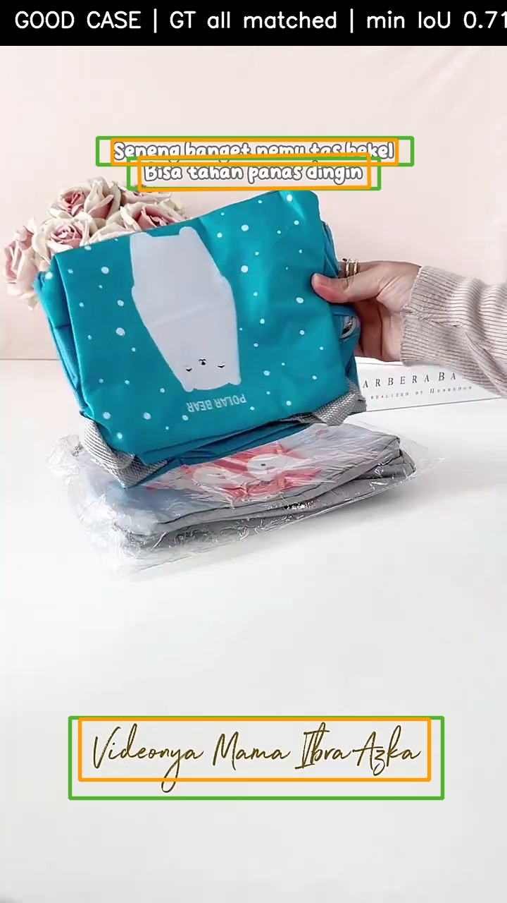
Subtitle + watermark matched3 个 GT 全部命中，覆盖顶部字幕和底部手写水印，min IoU 0.71。
统一使用当前 held-out split 和 GT=200 口径，评估 overlay recall、clean false positive、类型召回、V1 阈值收益，并补充官方预训练 baseline、V4/V5/V6/V7 结果。
当前主表统一使用最新 checked-in label：work/ppocr_business_split_synth_v3/labels/test_business.txt。该口径下 test images 为 134，GT boxes 为 200，clean images 为 25。Postprocess: thresh=0.15, box_thresh=0.40, unclip_ratio=1.8. Match: polygon IoU >= 0.50.
reports/ppocrv6_official_pretrained_baseline_2026-06-29.md 是旧 work/business_benchmark 口径，不能直接比较；下表的 official pretrained 行是 2026-07-06 在当前 GT=200 held-out split 上重跑的同口径结果。| Model | Pred | TP | FP | FN | Precision | Recall | HMean/F1 | Clean FP images | Watermark recall | Readout |
|---|---|---|---|---|---|---|---|---|---|---|
| V1 continue | 232 | 188 | 44 | 12 | 81.03% | 94.00% | 87.04% | 4/25 (16.00%) | 87.88% (58/66) | 当前最佳主模型 |
| Official pretrained | 384 | 183 | 201 | 17 | 47.66% | 91.50% | 62.67% | 11/25 (44.00%) | 81.82% (54/66) | 文字先验强，但 clean/native 误检多 |
| V4 best | 260 | 178 | 82 | 22 | 68.46% | 89.00% | 77.39% | 12/25 (48.00%) | 90.91% (60/66) | watermark 高，但整体 recall/FP 明显差 |
| V5 best | 240 | 186 | 54 | 14 | 77.50% | 93.00% | 84.55% | 5/25 (20.00%) | 84.85% (56/66) | 比 V4 稳定，但仍低于 V1 |
| V6 best | 230 | 183 | 47 | 17 | 79.57% | 91.50% | 85.12% | 4/25 (16.00%) | 81.82% (54/66) | 水印专项训练退化 |
| V7 best | 230 | 187 | 43 | 13 | 81.30% | 93.50% | 86.98% | 4/25 (16.00%) | 86.36% (57/66) | 修复 V6 退化，接近但未超过 V1 |
| V7 latest | 231 | 186 | 45 | 14 | 80.52% | 93.00% | 86.31% | 4/25 (16.00%) | 83.33% (55/66) | 不如 V7 best |
V1 在 box_thresh=0.15~0.40 的 TP 均为 188；由于当前 GT=200，recall 为 94.00%。0.45 开始掉到 93.00%。绿色行是当前推荐工作点。
| box_thresh | Precision | Recall | Miss | HMean | Pred | TP | FP | FN | Clean FP images | Clean FP boxes/image |
|---|---|---|---|---|---|---|---|---|---|---|
| 0.15 | 0.6643 | 0.9400 | 6.00% | 0.7785 | 283 | 188 | 95 | 12 | 6/25 (24.00%) | 0.40 |
| 0.20 | 0.6738 | 0.9400 | 6.00% | 0.7850 | 279 | 188 | 91 | 12 | 6/25 (24.00%) | 0.40 |
| 0.25 | 0.7121 | 0.9400 | 6.00% | 0.8103 | 264 | 188 | 76 | 12 | 6/25 (24.00%) | 0.36 |
| 0.30 | 0.7550 | 0.9400 | 6.00% | 0.8374 | 249 | 188 | 61 | 12 | 6/25 (24.00%) | 0.32 |
| 0.35 | 0.7866 | 0.9400 | 6.00% | 0.8565 | 239 | 188 | 51 | 12 | 4/25 (16.00%) | 0.20 |
| 0.40 | 0.8103 | 0.9400 | 6.00% | 0.8704 | 232 | 188 | 44 | 12 | 4/25 (16.00%) | 0.20 |
| 0.45 | 0.8230 | 0.9300 | 7.00% | 0.8732 | 226 | 186 | 40 | 14 | 4/25 (16.00%) | 0.16 |
box_thresh=0.40。在当前 held-out test 上 recall 为 94.00%，miss rate 6.00%，precision 为 81.03%，clean FP 为 4/25。下表补充 official pretrained 和所有有类型拆分结果的 V4-V7。官方预训练对字幕/标题有较强文字先验，但 watermark 和 clean FP 明显弱于 V1；V4 的 watermark recall 最高，但 title/sticker 和 clean FP 明显变差；V7 best 相比 V6 恢复 watermark，但仍低于 V1。
| Model | title_text | watermark | subtitle | sticker | product_label | screen_ui |
|---|---|---|---|---|---|---|
| V1 continue | 100.00% (87/87) | 87.88% (58/66) | 96.77% (30/31) | 81.82% (9/11) | 100.00% (4/4) | 0.00% (0/1) |
| Official pretrained | 96.55% (84/87) | 81.82% (54/66) | 96.77% (30/31) | 90.91% (10/11) | 100.00% (4/4) | 100.00% (1/1) |
| V4 best | 88.51% (77/87) | 90.91% (60/66) | 93.55% (29/31) | 63.64% (7/11) | 100.00% (4/4) | 100.00% (1/1) |
| V5 best | 100.00% (87/87) | 84.85% (56/66) | 96.77% (30/31) | 81.82% (9/11) | 100.00% (4/4) | 0.00% (0/1) |
| V6 best | 98.85% (86/87) | 81.82% (54/66) | 96.77% (30/31) | 81.82% (9/11) | 100.00% (4/4) | 0.00% (0/1) |
| V7 best | 100.00% (87/87) | 86.36% (57/66) | 96.77% (30/31) | 81.82% (9/11) | 100.00% (4/4) | 0.00% (0/1) |
| V7 latest | 100.00% (87/87) | 83.33% (55/66) | 96.77% (30/31) | 90.91% (10/11) | 100.00% (4/4) | 0.00% (0/1) |
| Image | Attribution |
|---|---|
test_business/clean/video_029/scene_0002_frame_000136.jpg | tiny_noise_or_texture (native IoU 0.02, native product_label); overlap_native_or_product_text (native IoU 0.35, native product_label) |
test_business/clean/video_029/scene_0004_frame_000324.jpg | visual_unknown_non_native (native IoU 0.00, native -) |
test_business/clean/video_076/scene_0006_frame_000381.jpg | visual_unknown_non_native (native IoU 0.00, native -) |
test_business/clean/video_076/scene_0006_frame_000402.jpg | visual_unknown_non_native (native IoU 0.00, native -) |
当前 GT=200 口径下，V1 continue 在推荐工作点共漏检 12 个 instance：watermark 8 个、subtitle 1 个、sticker 2 个、screen_ui 1 个。下表列出完整 FN。
| Image | text_type | category | text |
|---|---|---|---|
test_business/overlay/video_011/scene_0002_frame_000193.jpg | watermark | overlay_watermark_ui | Video by Cece Dini |
test_business/overlay/video_014/scene_0001_frame_000030.jpg | watermark | overlay_watermark_ui | NVCASE |
test_business/overlay/video_014/scene_0002_frame_000209.jpg | watermark | overlay_watermark_ui | NVCASES |
test_business/overlay/video_031/scene_0006_frame_000293.jpg | subtitle | overlay_subtitle | teksturnya lembut dan nggak lengket |
test_business/overlay/video_033/scene_0001_frame_000029.jpg | watermark | overlay_watermark_ui | video milik @titin suhartinn |
test_business/overlay/video_033/scene_0002_frame_000100.jpg | watermark | overlay_watermark_ui | video milik @titin suhartinn |
test_business/overlay/video_033/scene_0003_frame_000145.jpg | watermark | overlay_watermark_ui | video milik @titin suhartinn |
test_business/overlay/video_033/scene_0005_frame_000269.jpg | watermark | overlay_watermark_ui | video milik @titin suhartini |
test_business/overlay/video_033/scene_0007_frame_000376.jpg | watermark | overlay_watermark_ui | video milik @titin suhartinn |
test_business/overlay/video_056/scene_0001_frame_000030.jpg | sticker | overlay_graphic | #DISKON RAGUN SHOPEE |
test_business/overlay/video_056/scene_0002_frame_000151.jpg | sticker | overlay_graphic | #DISKON RAGUN SHOPEE |
test_business/overlay/video_056/scene_0003_frame_000240.jpg | screen_ui | overlay_watermark_ui | ShopeeVideo |
以下 case 使用推荐工作点 box_thresh=0.40 汇报。绿色是真实标签，橙色是 V1 continue 预测框；clean FP case 只有预测框。

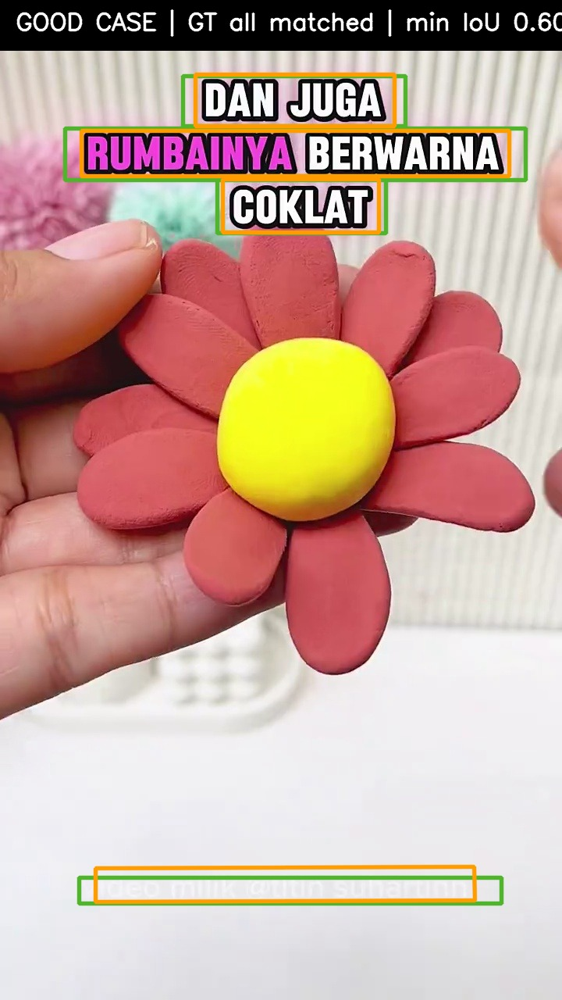
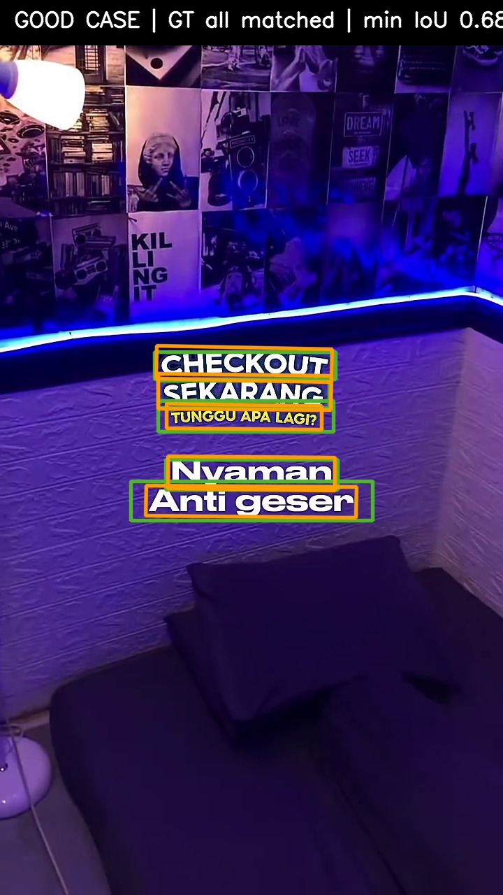
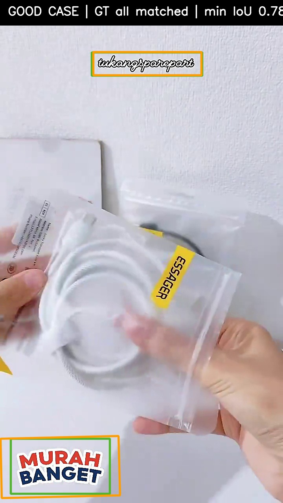
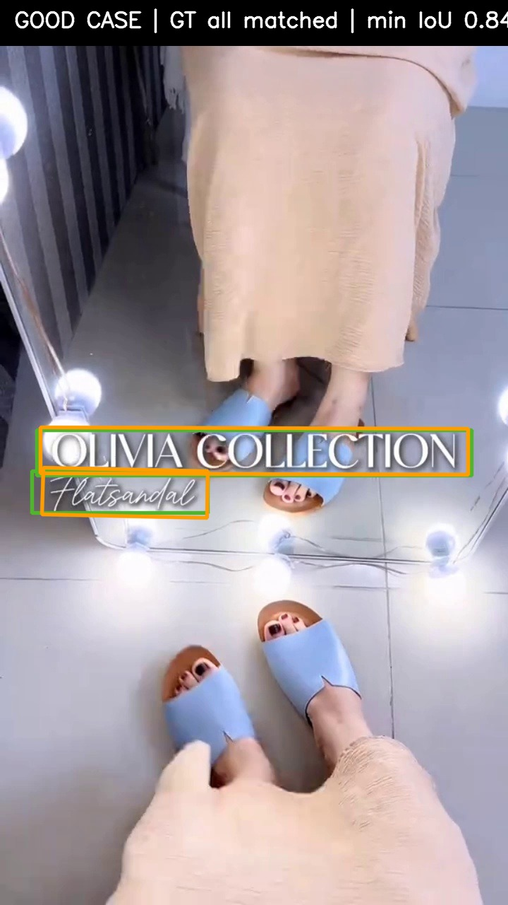
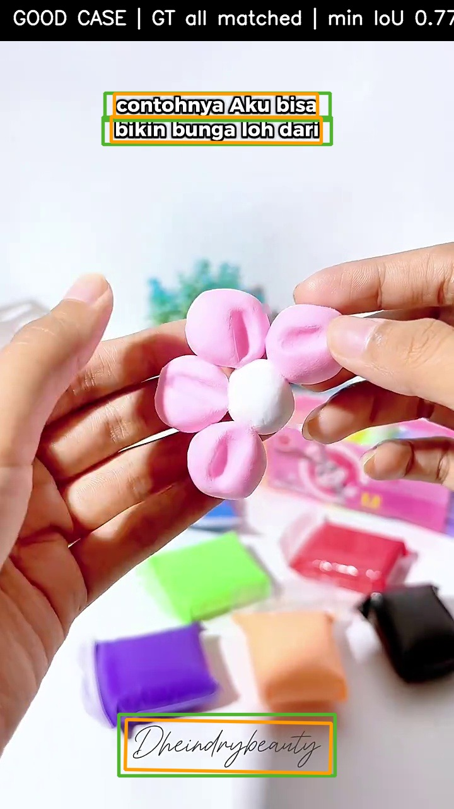
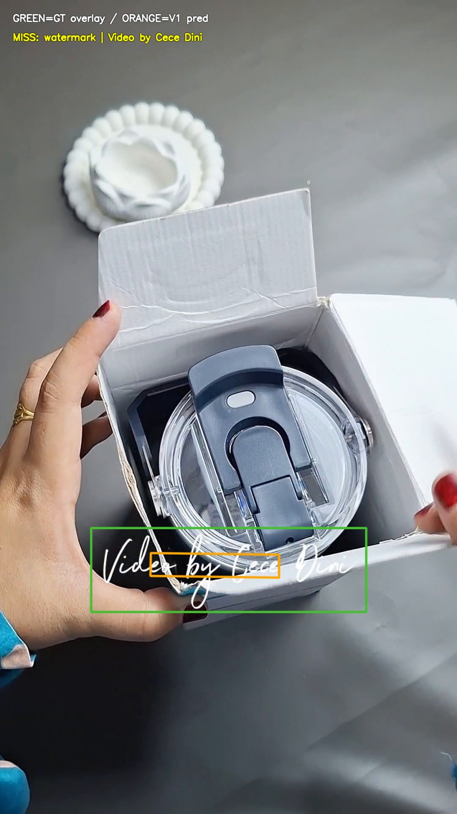
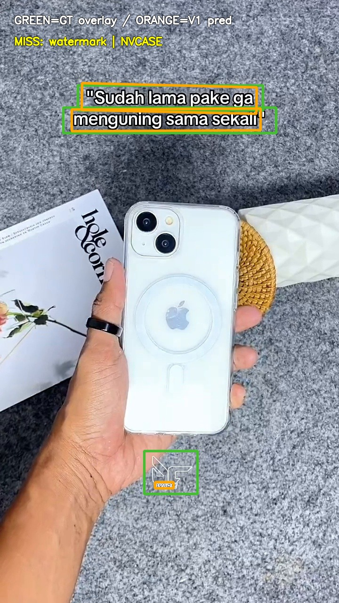
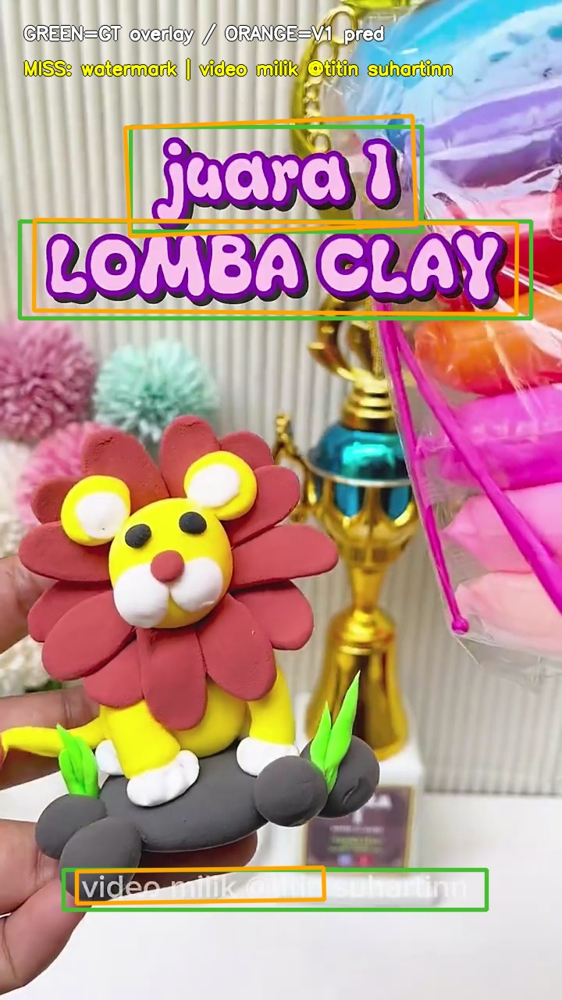
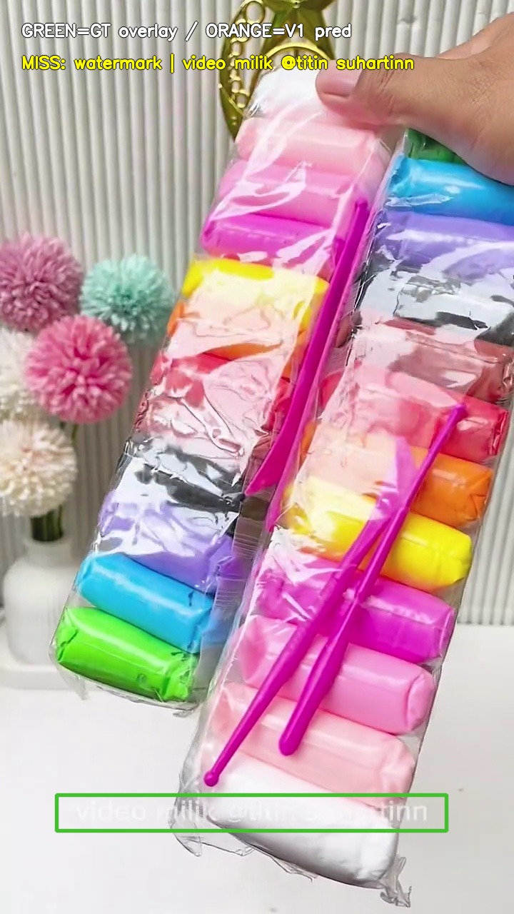
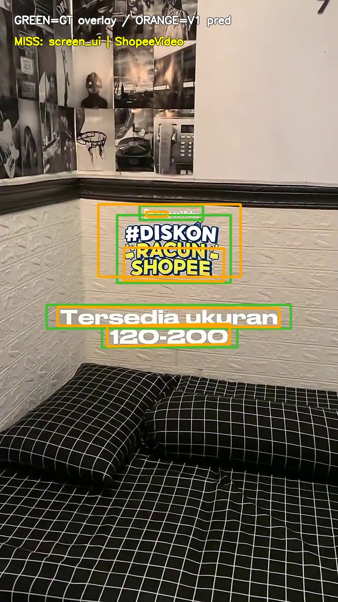
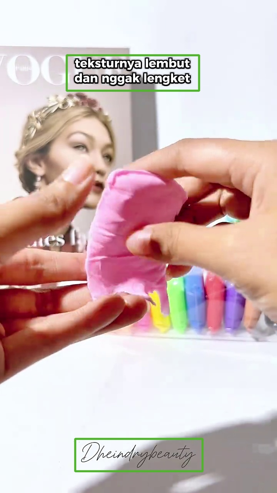
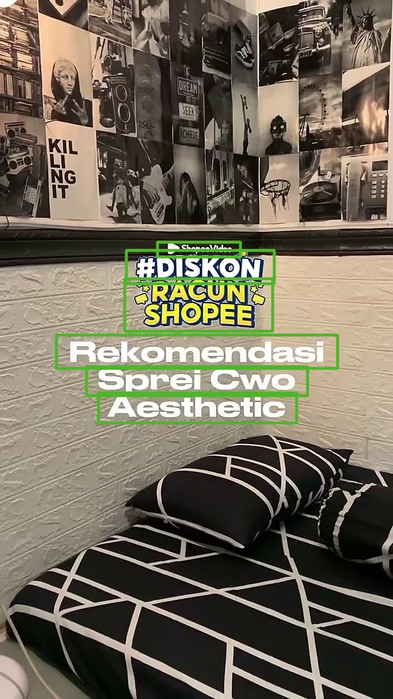
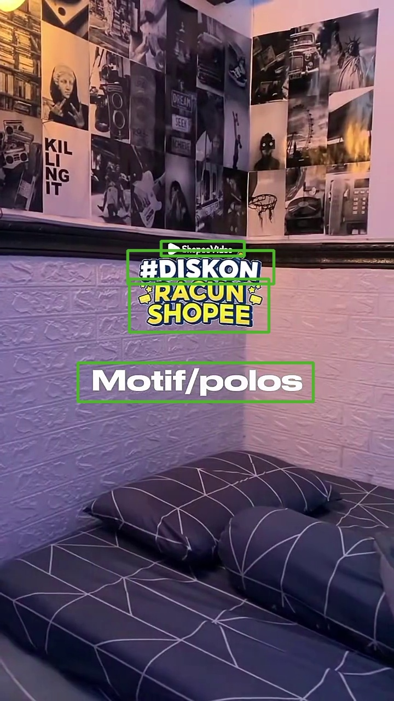
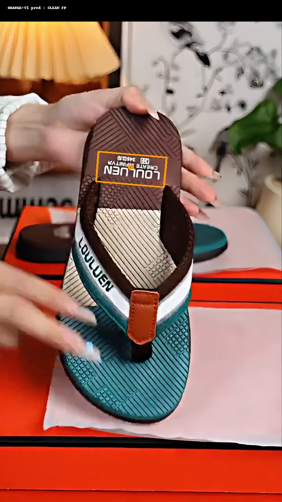
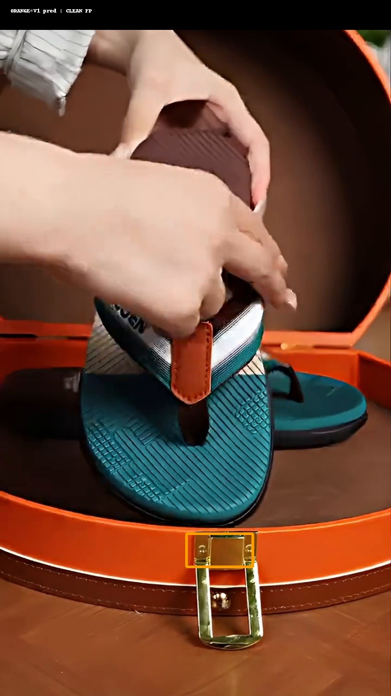
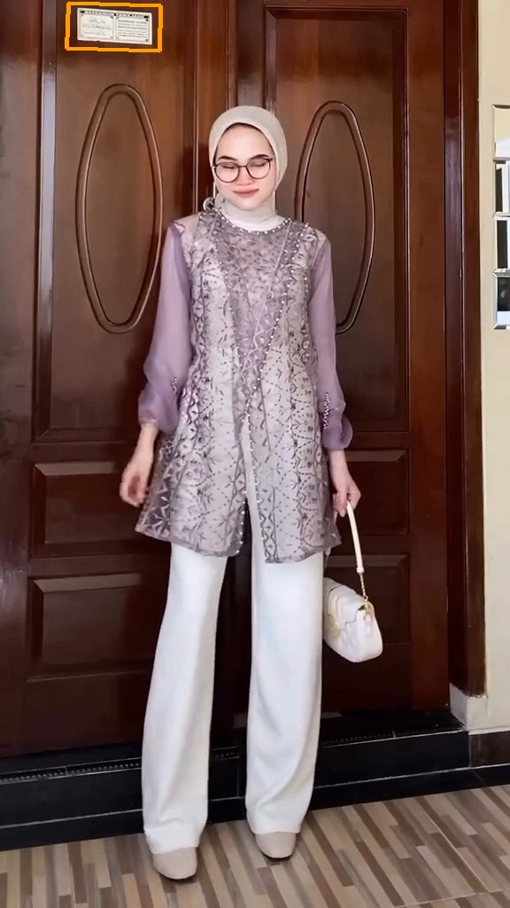
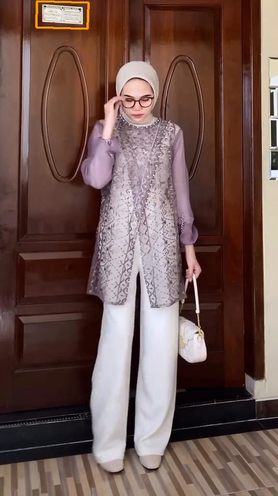
box_thresh=0.40。相比官方预训练，V1 在同口径下把 precision 从 47.66% 提到 81.03%，clean FP 从 11/25 降到 4/25，同时 recall 从 91.50% 提到 94.00%。V7 best 已修复 V6 退化但仍未超过 V1；下一轮提升重点继续围绕细长/低对比 watermark，同时避免牺牲 title/subtitle recall 和 clean FP。